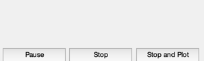
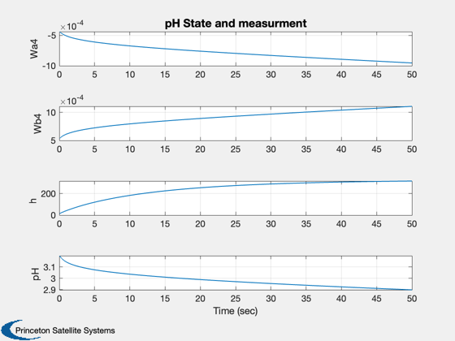

Simulation for pH process
Simulates a simple model of a pH process. The process consists of an acid (HNO3) stream, buffer (NaHCO3) stream, and base (NaOH) stream that are mixed in a stirred tank. The chemical equilibria is modeled by introducing two reaction invariants for each inlet stream. fzero is used to solve the equations for the PH sensor.
------------------------------------------------------------------------- Reference: List references if applicable ------------------------------------------------------------------------- See also: RHSpH, HpH, TimeGUI, Plot2D -------------------------------------------------------------------------
Contents
%-------------------------------------------------------------------------- % Copyright (c) 2001 Princeton Satellite Systems, Inc. % All rights reserved. %-------------------------------------------------------------------------- % Since version 1. %--------------------------------------------------------------------------
Global for the time GUI
Creates a global variable for the time GUI, which displays the time remaining and estimated completion of a simulation. It computes the time left to go in the simulation, the predicted finish time and the ratio of simulation time to real time. -------------------------------------------------------------------------
global simulationAction simulationAction = ' ';
Constants
+ - - =
wAi = [H ]i - [OH ]i - [HCO3]i - 2[CO3]i
- =
wBi = [H2CO3]i + [HCO3]i + 2[CO3]i
%---------------------------------------------- d = struct; d.wA1 = 0.003; % Reaction invariant for species A in the acid % stream (M) d.wA2 = -0.03; % Reaction invariant for species A in the buffer % stream(M) d.wA3 = -3.05e-3; % Reaction invariant for species A in the base % stream(M) d.wB1 = 0.0; % Reaction invariant for species B in the effluent % stream(M) d.wB2 = 0.03; % Reaction invariant for species B in the acid % stream(M) d.wB3 = 5.0e-5; % Reaction invariant for species B in the buffer % stream(M) d.pK1 = log10(4.47e-7); % Base 10 log of equilibrium constant d.pK2 = log10(5.62e-11); % Base 10 log of equilibrium constant d.a = 207; % Crossectional area of the mixing tank (cm^2) d.cV = 1; % Valve coefficient d.n = 0.607; % Valve exponent d.z = 11.5; % Vertical distance between bottom of tank and % outlet of effluent (cm) d.q1 = 16.6; % Volumetric flow of HNO3 (ml/s) d.q2 = 15.6; % Volumetric flow of NaHCO3 (ml/s) d.q3 = 0.55; % Volumetric flow of NaOH (ml/s) -used as control wA4 = -4.32e-4; % Reaction invariant for species A in the effluent % stream(M) wB4 = 5.28e-4; % Reaction invariant for species B in the base % stream(M) h = 14.0;
Initial conditions
-------------------
x = [wA4;wB4;h]; t = 0;
The control sampling period and the simulation integration time step
---------------------------------------------------------------------
dT = 5/100;
Number of sim steps
--------------------
nSim = 1000; tEnd = nSim*dT;
Plotting arrays
----------------
tPlot = zeros(1,nSim); xPlot = zeros(4,nSim);
Time statistics function
-------------------------
tToGoMem = [];
Initialize the time display
----------------------------
tToGoMem.lastJD = 0;
tToGoMem.lastStepsDone = 0;
tToGoMem.kAve = 0;
[ratioRealTime, tToGoMem] = TimeGUI( nSim, 0, tToGoMem, 0, dT, 'pH Simulation' );
 Run the simulation
-------------------
for k = 1:nSim % Display the status message %--------------------------- [ ratioRealTime, tToGoMem ] = TimeGUI(nSim,k,tToGoMem,ratioRealTime,dT); % Integrate one step %------------------- x = RK4( 'RHSpH', x, dT, t, d ); t = t + dT; tPlot(k) = t; % Solve for the nonlinear sensor output %-------------------------------------- y = fzero( 'HpH', 0, [], x, d ); xPlot(:,k) = [x;y]; % Time control %------------- switch simulationAction case 'pause' pause simulationAction = ' '; case 'stop' return; case 'plot' break; end end TimeGUI( 'close' )
Plot results
Open loop response.
%-------------------- j = 1:k; tPlot = tPlot(j); xPlot = xPlot(:,j); Plot2D( tPlot, xPlot,'Time (sec)',{'Wa4' 'Wb4' 'h' 'pH'},'pH State and measurment') %-------------------------------------- % $Date$ % $Id: 4436f5e9e085b89b0370677c28b11041e6dd4aca $